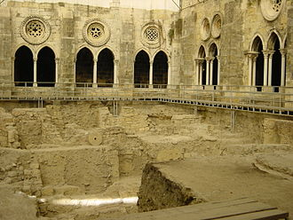
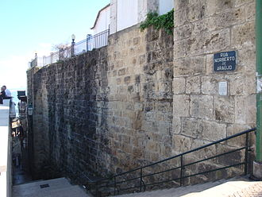
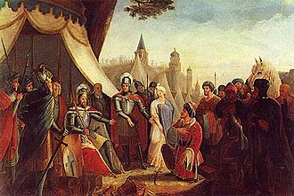
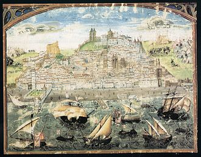

TripAdvisory
Welcome To Lisbon, Portugal
History of Lisbon
Roman rule, Moorish occupation, imperial aspirations and a catastrophic earthquake: Lisbon has experienced them all. Lisbon is one of the world’s oldest cities. During the Neolithic period, pre-Celtic tribes inhabited the region. Archaeologists claim that Phoenicians established a trading port here in the sheltered Tagus estuary. The Romans began a 200-year reign here in 205BC. Lisbon became one of the most significant cities in the Iberian Peninsula, particularly when Julius Caesar became governor in 60BC. Lisbon was later occupied by a succession of conquerors, most notably the Moors for 450 years from AD711, when the city prospered as a trading centre.
| Evolution | Period | Photo |
|---|---|---|
| Pre-Roman |
8th to 6th centuries BC
Ancient authors refer to popular legends that the city of Lisbon was founded by the mythical hero Odysseus on his journey home from Troy. The Estrímnios (in Portuguese) are given by some historians as the first known native people of Portugal. |
 |
| Roman era |
Around 80 BC
Recent archaeological finds show that Lisbon grew around a pre-Roman settlement on the hill of the Castelo de São Jorge, as its ancient name, Olissipo, indicates.During the Second Punic War, Mago, the younger brother of Hannibal Barca, was stationed with his troops among the Cynetes, or Conii, in the Algarve, while Hasdrubal Gisco was encamped at the mouth of the Tagus on the Atlantic coast. |
 |
| Middle Ages |
1100 BC
On 6 August 711, Lisbon was taken by Muslim forces. These conquerors, who were mostly Berbers and Arabs from North Africa and the Middle East, built many mosques and houses, rebuilt the city wall (known as the Cerca Moura) and established administrative control, while permitting the diverse population (Muladi, Mozarabs, Berbers, Arabs, Jews, Zanj and Saqaliba) to maintain their socio-cultural lifestyles. |
 |
| Early Modern |
1100 BC
Most of the Portuguese expeditions of the Age of Discovery left Lisbon during the period from the end of the 15th century to the beginning of the 17th century, including Vasco da Gama's expedition to India in 1498. In 1506, 3,000 Jews were massacred in Lisbon.[31] The 16th century was Lisbon's golden era: the city was the European hub of commerce between Africa, India, the Far East and later, Brazil, and acquired great riches by exploiting the trade in spices, slaves, sugar, textiles and other goods. |
 |